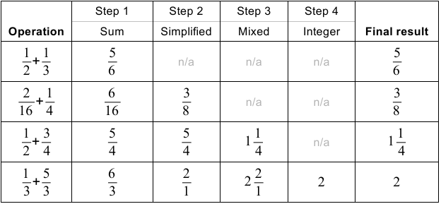
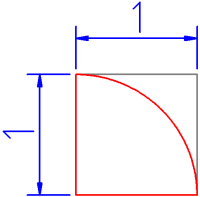
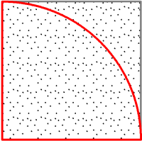
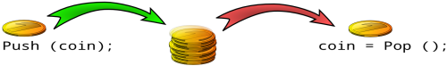

- Introduction
- Your workspace
- Using Javascript
- Javascript tour
- Statements
- Variables
- Operators
- Control flow
- Functions
- Problem solving
Other links:
Work area
|
Problem solving
Programming is all about solving problems. There isn't any prescribed way how to solve a given problem -
it's down to your creativity and sheer patience! Here are some hints how to solve any given computing problem:
- Recon it!
-
According to Wikipedia, "Reconnaissance is the military term for exploring beyond the area occupied
by friendly forces to gain vital information about enemy forces or features of the environment for
later analysis and/or dissemination.
(https://en.wikipedia.org/wiki/Reconnaissance)"
Before you work on your given problem, give it some recon time, too! Practically, this means you
need to do some research and thinking about it, before you start the coding. To recon! successfully, it
often helps to get away from the computer and to go for a walk. Pencil and paper are useful tools!
Or, sit somewhere quiet, where you can close your eyes and reflect on the problem. The recon! phase is the
most fun, but it can be stressfull, and sometimes you need sheer endurance to keep going.
- Google!
-
These days one of the most important skills is knowing how to use a search engine! Many computing
problems have already been worked on by other people. Whilst you may not find the solution for
your given problem, there's a good chance that a search engine will fine some good clues to help you.
- Be lazy!
-
Ugh, terrible suggestion! But if your investigation shows that someone else already wrote software
for your problem, why doing double work (Unless you write to learn)? Sometimes it's actually better
to use other people's work. For example, if you want to use cryptography in your software it's
a wise move to use an existing library which offers this functionality, rather than cooking up
your own scheme. Unless you understand cryptography, your scheme will most likely be compromised!
With any library software you must check the license situation - whether you are actually allowed
to use the given library for your project!
- Divide and conquer!
-
If you have to move a ton of potatos from A to B, it helps to divide the ton into small portions and move
the potatos one portion a time. Often a given problem consists of several smaller sub problems. Try to
identify whether you can split your problem into sub problems! Then work on the sub problems separately.
As a side effect, this will help you to structure your resulting code so the solution is easier to
undestand for others (incl. yourself ten years later).
- Capture the future!
-
When you write the solution code, try to write more generic code which can be re-used for other projects.
Over time you will have a library of code ready, and you will find that you'll always have some code handy
for the problems given to you then.
- Work together!
-
You can't be good at everything! Coming back to the ton-of-potatos-example, the task of moving will be
even speedier when you ask a few friends to help you! In programming it's similar - if you divide the
given problem right you can get a team to solve all the sub problems you identified! And even if you
have to wing it alone, you can still talk to others about that problem! Often a second opinion is all
that's needed for a good solution!
Solving problems is exciting and at times frustrating! The skills above don't come cheap, but need to be
constantly honed by practice! The most important ingredient in the mix is a love for technical challenges
which results in solutions that reflect that love! Too many people work out of love for money. Avoid this
trap, but work for the benefit of others! The right heart attitude is more important than all other skills!
Keep your heart with all diligence, for out of it is the wellspring of life. (Prov. 4:23)
Exercises
Just for these exercises, disregard the above advice to Google! or
Be Lazy! As a student you won't benefit from a ready made solution! However,
I encourage you to use a search engine to research basic information when you need to do so. For
example, for the exercise about stacks, you may want to find some more
information on what stacks are before you start planning your program.
-
Fractinello!
No worries - this is not a call to invent a new flavour of italian ice cream! However, what
I'd like you to do is to write a program which adds two fractions! The program must present
the result in its simplest and creamiest form, like Mr. Fractinello!s Vanilla Milli!
Examples:

-
Number land!
Write a program which converts a positive decimal integer number into a number in another
number system. For the target system we allow bases between 1 and 16. For
example, if we want to convert the decimal number 25 into its septinary (base 7) equivalent,
the program would show the value 34.
-
Convert it!
Javascript provides a function parseInt (str) which converts a numerical string into
a number. Write a program which does the same. The program must reject invalid input (e.g.
"3w5") or strings that are longer than eight characters. Do not use implicit type
casting (e.g. 1 * "123"), and do not use any inbuilt Javascript conversion functions.
-
Let's eat Pie in Monte Carlo!
Sorry, it's not about travelling nor culinaric finesse, but about the Monte Carlo method of computation!
Today we'll use it to compute the number π (which is something in the region of 3.14). The idea
goes as follows:
|
Imagine a square piece of paper with a side length of 1 meter. On it we draw a quarter
circle with a radius of 1 meter and the center point on one of the corners of the
paper:
|

|
|
Now we put the paper on the floor next to a table. Then we climb on the table and
empty a pepper shaker all over the paper. After some shaking, the paper will look
peppered like this:
|

|
Now we count the number of pepper grains inside the quarter circle, and the total number of
grains on the paper. Here comes the surprise: The relationship between both counts will
somehow contain an approximate of the number π!
After the long intro - here's your exercise: Write a program which simulates the above paper
and pepper method to calculate an approximate value of the number π (and print it to the console)!
-
StackItUp!
A data structure which is often used in computing is the stack. It's mostly used when
a program needs to remember data for later use, before going off to do something else. A stack
inserts and retrieves data items at one end. Inserting an item is called pushing, and
retrieving an item is called popping. Any popped item is removed from the stack. This
works quite similar to adding and removing coins to/from a stack:

Your task (should you accept it; personally I think you have little choice in this matter), is
to write a program which implments a stack. The program must support these operations:
| Push (item) |
Pushes item onto the stack. |
| item = Pop () |
Returns the stack's top element and deletes it from the stack. |
| n = GetSize () |
Returns the curent number of elements stored in the stack. |
Together with these operations, identify weaknesses in your design and address these by
building in some security - e.g. ensuring that an error message is printed to the console if
someone tries to pop an element off an empty stack!
Javascript has got some inbuilt functions related to pushing onto / popping from stacks
(e.g. Aray.push (), Array.pop ()), but don't use these! Instead, write
your own code which does the pushing and popping!
-
Using the stack design you developed in the previous exercise,
write a program which reverses a string!
-
Simultanelicious!
Here's a system of simultaneous equations:
2a + 5b = 29
7a - 2b = 4
The solution to this system is a = 2, b = 5. Here's a system which is unsolvable,
because it does not have any solution:
2x + 3y = 5
2x + 3y = 4
And here's a system which is unsolvable because it does have an infinite amount of solutions:
x + y = 2
x + y = 2
Write a program which takes any system of two equations with two variables as input and either
provides the solution or indicates that the system is unsolvable!
|